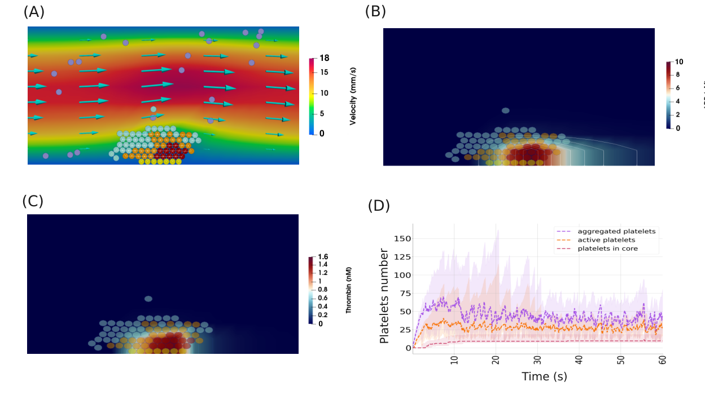
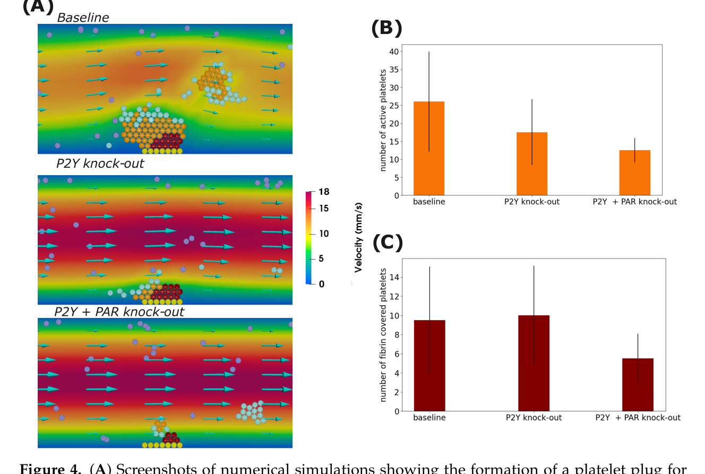

Simulation panels from the open-access paper.
Intracellular calcium regulation shapes thrombus formation and response to pathway inhibition
My collaborators and I developed a multiscale description of platelet accumulation under flow that links transport and local agonist concentrations to intracellular calcium activation. The model captures how activated platelets recruit additional cells and develop spatially heterogeneous thrombi.
Spatially varying signalling helps explain the appearance of more strongly activated platelet regions and a surrounding shell. Simulated interference with ADP/P2Y- and thrombin/PAR-related activation altered clot growth and composition, with effects depending on how the pathways contribute to recruitment and stability.
These results provide hypotheses about where and when platelet-signalling pathways become limiting. They are simulation-based mechanistic findings, not estimates of clinical treatment efficacy.
Bouchnita & Volpert · Computation · 2024 ↗